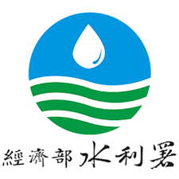

Mike Lee(Min-Ze, Lee)
Administration / Water Conservancy Analyst Assistant
Temporary worker with 2 years of corporate experience in GIS analysis and map construction.seeking a position as a Marketing Specialist at tsmc, to improve the efficiency and accuracy of corporate planning and marketing .

0920153957

hhhasd0123@gmail.com

台中市南屯區
Work Experience
Writer(Contractor)
宇邑數位行銷有限公司 | 2021.01~2021.09- Create topics and popular information to improve the interaction rate and community image of designated communities.
- Familiar with mainstream communities and forums, such as Facebook, Instagram, Dacrd, Bahamut, etc..
- Issue ideas and execute related plans, publish posts and reply to private messages from fans in the community.
- Simple graphics to increase the detailed information and appreciation of the article.
Temporary Worker
經濟部水利署 | 2021.09~present- Serve as the system inquiry window, reply to inquiries from the general public. and engineering consulting companies, and assist colleagues in promoting water conservancy related businesses.
- One of the editorial groups of the Water Conservancy Department, regularly uploads and publishes information related to water conservancy.
- Use GIS analysis to make a map.
- General clerical and administrative processing

Education
國立中興大學National Chung Hsing University
Bachelor of Marketing - 2020
Skills and Certificate
- Marketing Planning : Advertising Planning and Copywriting
- Writing Skills : Proposal and Presentation Skills
- GIS Softwares : Map generation, geographic information analysis and other functions can be used in various industries.
- Office Softwares : Microsoft Office and XMind Using
- Language : English with GEPT Medium-high Level
Appendix
- 高中製作班級網頁 : https://thsh-brave307.weebly.com/
- Dcard個人經營頁面 : https://www.dcard.tw/my/persona?uid=mikk1127